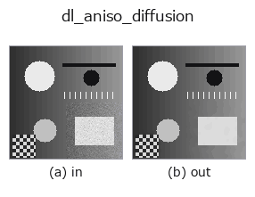

smoothing op• Datenarten: image → image
• Aufruf: fullseye.apply(img, "dl_aniso_diffusion", a=0.5, b=0.5) (das 2-D-Modell ist ein Bild plus zwei skalare Regler a,b∈[0,1])
• HALCON-Äquivalent: anisotropic_diffusion (Bedeutung und Parameter sind in der HALCON-Referenz nachzulesen)

*Die Abbildung ist die tatsächliche Ausgabe auf einer synthetischen 128×128-Eingabe. Links Eingabe, rechts Ausgabe. Punktwolken als Draufsicht-Streudiagramm (Helligkeit = z), 1-D-Reihen als Linie, Volumen als Maximum-Projektion entlang z, Videos als mittleres Bild, komplexe Bilder als Betrag; Rückgabewerte, die kein Bild ergeben, werden als Werte gezeigt.*
Regler a durchfahren (0,1 / 0,5 / 0,9, der andere Regler auf Standard):
▸ dl_aniso_diffusion: Regler a durchfahren (Doku-Website)
Regler b durchfahren (0,1 / 0,5 / 0,9, der andere Regler auf Standard):
▸ dl_aniso_diffusion: Regler b durchfahren (Doku-Website)
Auf anderen Bildern (synthetische Szene / Foto / Münzen. Obere Reihe: Eingaben, untere Reihe: deren Ausgaben. Regler auf Standard):
▸ dl_aniso_diffusion: andere Eingaben (Doku-Website)
*Die 4. Spalte ist eine Farb-Eingabe (H,W,3). Dieser Op verarbeitet Farbe, ohne Kanäle zu vermischen (er faltet den Farbkanal nicht als dritte Raumachse).*
Ein anisotroper Diffusionsfilter vom Perona-Malik-Typ (torch-Implementierung; läuft auf der GPU, sofern verfügbar).
Iterative Diffusion, die die Differenzen in den 4 Richtungen (oben, unten, links, rechts) jeweils mit einer Leitfähigkeit exp(-(Diff/K)^2) multipliziert und dann addiert; je größer der Gradient (je kantenartiger die Stelle), desto schwächer die Diffusion, sodass unter Erhalt der Kanten geglättet wird. a variiert den Schwellwert der Kantenerkennung K über 0.02–0.22 (K = 0.02 + 0.2*a; je größer, desto leichter diffundiert es über Kanten hinweg). b variiert die Anzahl der Iterationen über 5–20 (iters = 5 + int(b*15)). Die Schrittweite lam=0.2 ist fest. Anders als bei einer Gaußschen Weichzeichnung liegt der Vorteil darin, nur das Rauschen zu glätten, ohne Kanten weichzuzeichnen. Entspricht HALCONs anisotropic_diffusion (führt eine anisotrope Diffusion eines Bildes durch), ist aber eine Näherungsimplementierung, die nicht unbedingt dasselbe Ergebnis liefert.
Randbehandlung: auf die gegenüberliegende Seite umlaufen (periodisch) (gemessen; tools/impl2/border_probe.py).
• Leitfaden zur Familie gallery2d_smoothing_rank
• Katalog der Beispieldaten (Download-URLs / Lizenzen) — 2-D nutzt skimage.data (BSD/Public Domain) plus synthetische Bilder, 3-D nennt Download-URLs echter Datenquellen (Stanford, PDS, …).
• Herkunft und Literatur der Operatoren — die Quellen der Forschung/Verfahren, auf denen diese Operatorfamilie beruht.
• Der kanonische Algorithmus (Autor, Jahr) und seine Anwendungen stehen im Familienleitfaden oben.
Das Programm unten ist nachweislich lauffähig (gleiche Eingabe wie die Abbildung). In der Studio-Hilfe wird dieser Block zu Schaltflächen, die es sofort laden und ausführen.
dl_aniso_diffusion 0.35 0.50
▸ Diese Pipeline laden · Laden & ausführen
• gallery2d_smoothing_rank — py -3.11 examples/gallery2d_smoothing_rank.py
image als Eingabe)identity · gaussian · mean_box · bilateral · unsharp · median · min_filter · max_filter
smoothing)gaussian · mean_box · bilateral · unsharp · sk_tv · sk_wavelet · sk_rolling_ball · sk_nlm
*Provenance: ops.py — 2D Operator-Registry. Diese Notiz wird von tools/opdocs.py md erzeugt (nicht von Hand bearbeiten).*
© 2026 Kazufumi Furuse — Fullseye operator documentation. Licensed under Apache-2.0.